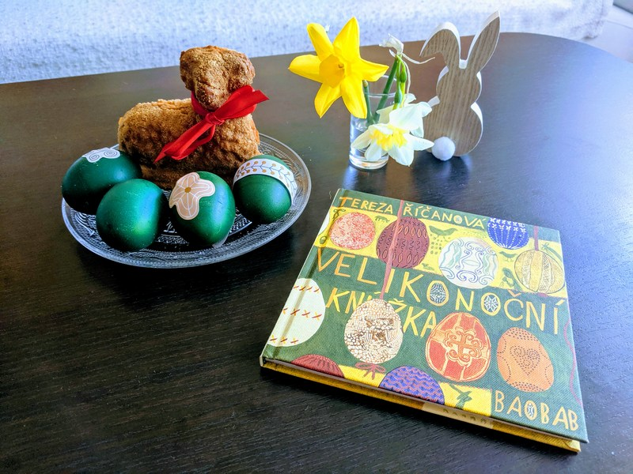

Psí knížka, o níž jste se tu mohli dočíst loni v létě, je u nás stále jedna z nejoblíbenějších dětských knih a jednou z mála, kterou mě pořád baví předčítat, a to i přesto, že už ji točíme třeba poněkolikáté za týden. A tak bylo jen otázkou času, kdy se v naší knihovničce objeví nějaký další autorský počin Terezy Říčanové.
Vzhledem k aktuálnímu ročnímu období tedy padla volba na Velikonoční knížku, která svérázným způsobem vypráví biblický příběh o ukřižování Ježíše, ale zároveň malé čtenáře seznamuje i s různými lidovými zvyky a tradicemi, které jsou s Velikonocemi spjaté.
Tentokrát mi, na rozdíl od Psí knížky, kniha přišla pro čtenáře-batole ještě moc složitá a to nejen tím, že zpracovává mnohem složitější téma, než jakým je psí život, ale i ve stylistické rovině. Místy je vyprávění až příliš zjednodušené a vyspělejší dětský čtenář, než je ten náš, by asi vyžadoval dovysvětlení souvislostí. Ilustrace jsou opět úžasné, ale z celé knihy našeho Oliho nejvíce zaujala vajíčka namalovaná na obálce a dál už o obsah nejevil příliš zájem :-D

Přesto mám z Velikonoční knížky v naší knihovně radost, protože knih s podobnou tematikou (na rozdíl třeba od Vánoc) na trhu moc není a můžeme se k ní každý rok vracet. A já se do té doby můžu aspoň kochat tímhle dalším literárním pokladem z nakladatelství Baobab :-)